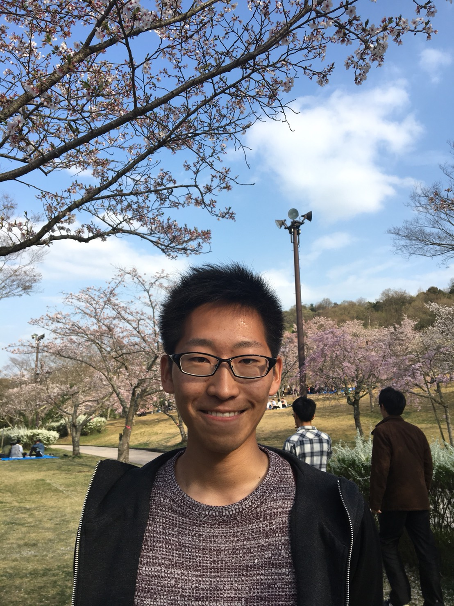

小澤 秀介

| 研究テーマ | ルテニウム酸化物超伝導体の電子状態の研究 |
|---|---|
| 出身 | 静岡 |
| 卒業論文題目 | 軟X線角度分解光電子分光を用いたルテニウム酸化物超伝導体の電子状態の研究 |
| 国際学会 | 4. 学会名：The 2019 Korea - Japan Students Workshop 題目：Angle-Resolved Photoemission Study on Unconventional Superconductor Sr2RuO4 場所：Pusan National University (2019.11) 口頭発表 3. 学会名：International Young Researchers Workshop on Synchrotron Radiation Science 2019 題目：Band renormalization effects on bulk electronic states in Sr2RuO4 場所：Hiroshima University (2019.9) ポスター発表 2. 学会名：The Second International Workshop Emergent Condensed-Matter Physics ECMP2019 題目：Large energy-scale band renormalization in Sr2RuO4 場所：Higashi-Hiroshima Arts & Culture Hall "Kurara", Japan (2019.3) ポスター発表 1. 学会名：The 23rd Hiroshima International Symposium on Synchrotron Radiation 題目：Large energy-scale band renormalization in Sr2RuO4 場所：Hiroshima Univ., Japan (2019.3) ポスター発表 |
| 国内学会 | 4. 学会名：日本物理学会 2020年・秋季大会 題目：高分解能ARPESによるルテニウム酸化物超伝導体Sr2RuO4における多体効果の検証 場所：熊本大学（2020.9, オンライン） 口頭発表 3. 学会名：日本物理学会 2019年・秋季大会 題目：Sr2RuO4のバルク電子状態における繰り込み効果 場所：岐阜大学 (2019.9) 口頭発表 2. 学会名：最先端光電子分光で拓く量子物質科学研究に関するワークショップ 題目：軟X線角度分解光電子分光によるSr2RuO4の電子状態の研究 場所：広島大学 (2019.9) ポスター発表 1. 学会名：日本物理学会 2019年・春季大会 題目：軟X線ARPESによるSr2RuO4の電子状態 場所：九州大学 (2019.3) ポスター発表 |
| 受賞歴 | 1. 賞名：Best Student Poster Award The 23rd Hiroshima International Symposium on Synchrotron Radiation 受賞年月：2019.3 |